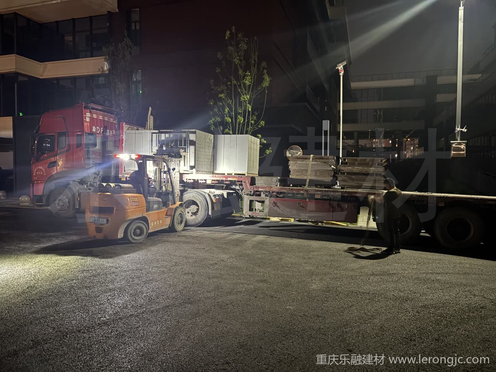
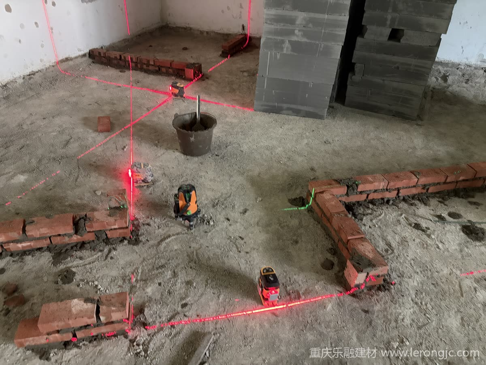
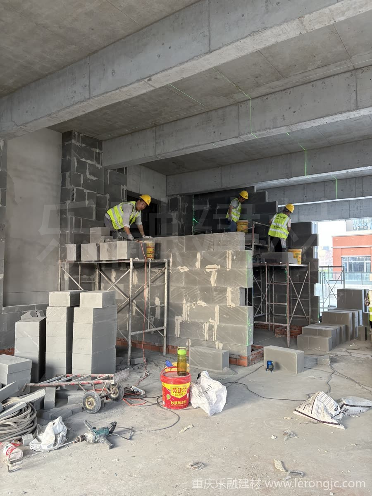
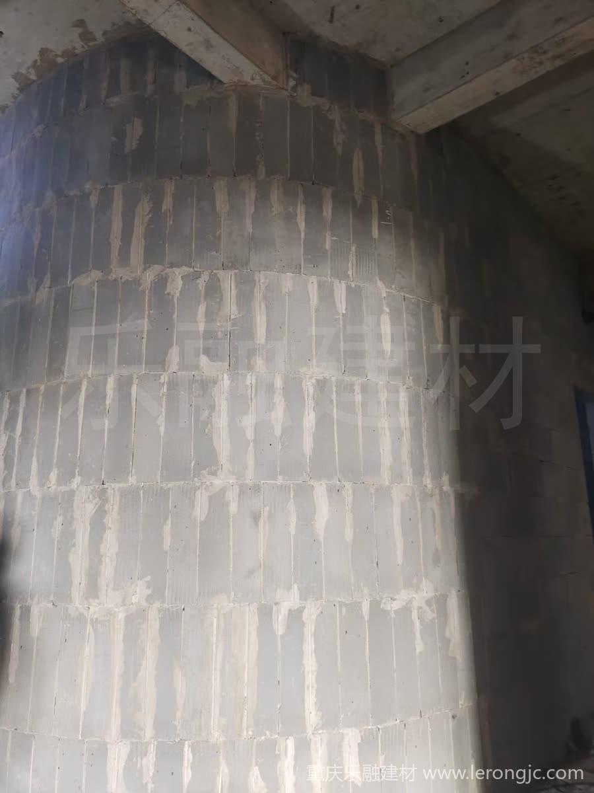
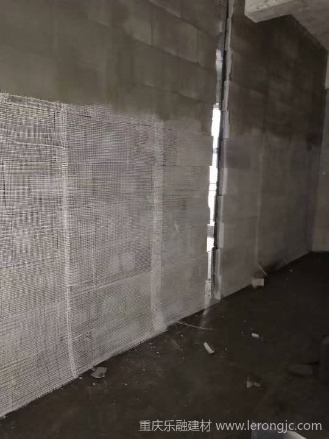
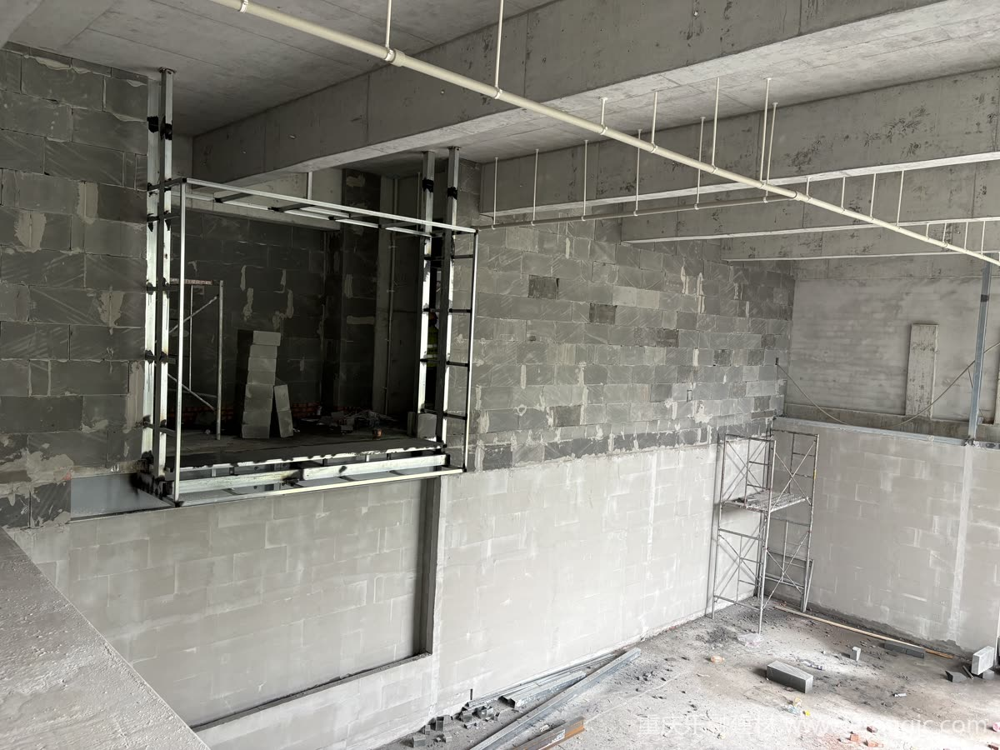
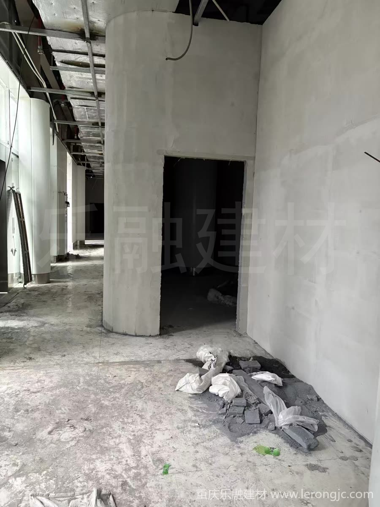
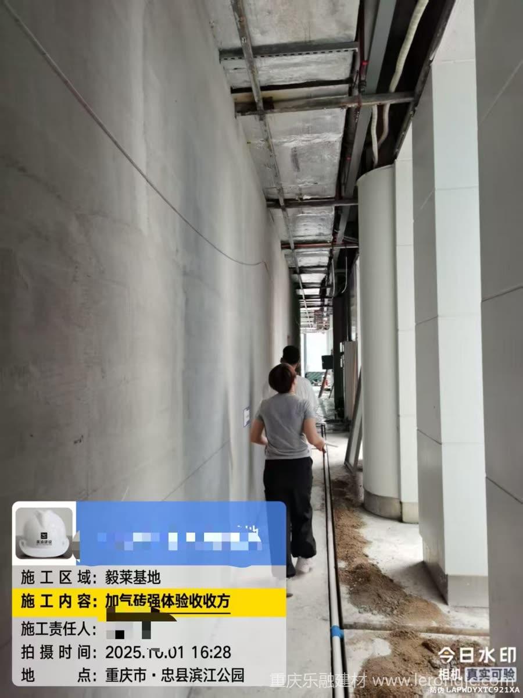

本项目为南川区某酒店室内改造加气砖隔墙工程：建筑主体翻新后，需要重新分隔出客房、走道与服务功能区的墙体。酒店类项目有三个硬指标——客房隔音必须达标、开业工期倒排一天不能拖、走廊造型墙观感要求高。
乐融班组按标准流程施工：夜间材料进场 → 激光放线排版 → 移动脚手架分层砌筑（含弧形造型墙）→ 挂网防裂 → 抹灰成型 → 走廊验收交付。以下 8 张照片按施工顺序完整记录了本项目从进场到交付的关键工序，均来自项目现场实拍。

酒店改造项目多在营业建筑或闹市区施工，白天地库与货梯使用受限。班组选择夜间集中进场：加气砌块按排版计划分层卸货、就近码放，既不干扰周边经营，也减少了二次搬运的破损。



客房隔墙的隔音效果，七分取决于砌筑质量：灰缝饱满度不足、通缝瞎缝多，声音就会沿缝隙穿透。班组全程错缝搭接、随砌随勾缝；走廊一侧的弧形造型墙利用加气砖可锯可刨的特性小面拼砌，既满足设计造型，又不牺牲墙体整体性。



砌体与主体结构交接处是裂缝高发区，抹灰前满铺网格布、梁底墙顶等重点部位双层加强，是杜绝客房后期开裂、投诉返工的关键工序。抹灰完成后的走廊墙面平整度、垂直度实测达标，无需局部修补即可移交下道工序，为酒店抢出了宝贵的收尾时间。

交付阶段甲方与监理按垂直度、平整度、洞口尺寸、灰缝质量逐间核验，本项目一次验收通过，为酒店按期开业留足了装修收尾时间。
照片记录的是结果，结果背后是夜间进场、激光排版、错缝砌筑、挂网防裂这些看不见的工序。酒店、宾馆类项目工期倒排、标准高，乐融建材可按开业节点倒排工期、两班作业，自有班组直营管理，不转包不挂靠。
同类项目咨询：拨打 18723377259（24 小时）或在线留言，免费上门测量、1 个工作日出明细报价。也可参考学校改造项目实拍，了解更多弧形墙体与放线细节。